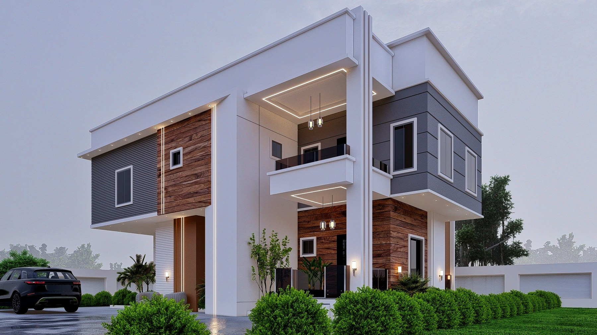
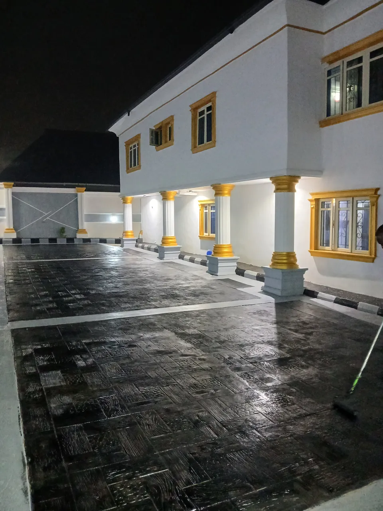

Building & civil works
Residential and commercial construction, civil infrastructure and site supervision.
Building servicesEngineering & construction in Ibadan
TW&D helps clients plan, build and supervise projects in Ibadan and across Nigeria.

Checking live totals…
Services
Residential and commercial construction, civil infrastructure and site supervision.
Building services
Technical planning and project reviews for clients preparing to build or develop a site.
Consultancy services
Property development, borehole drilling, plumbing, electrical installations and solar power.
Property and site services
Contact TW&D
Share the project type, location and what you need help with.